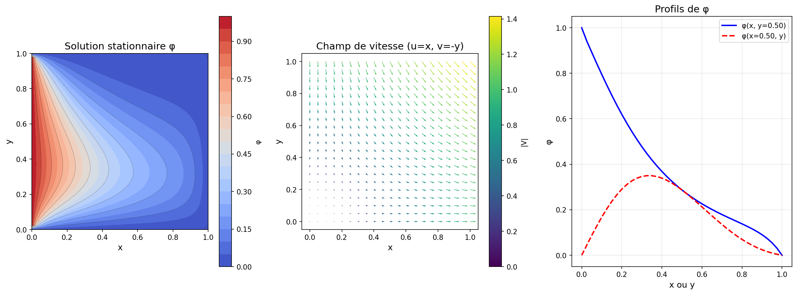
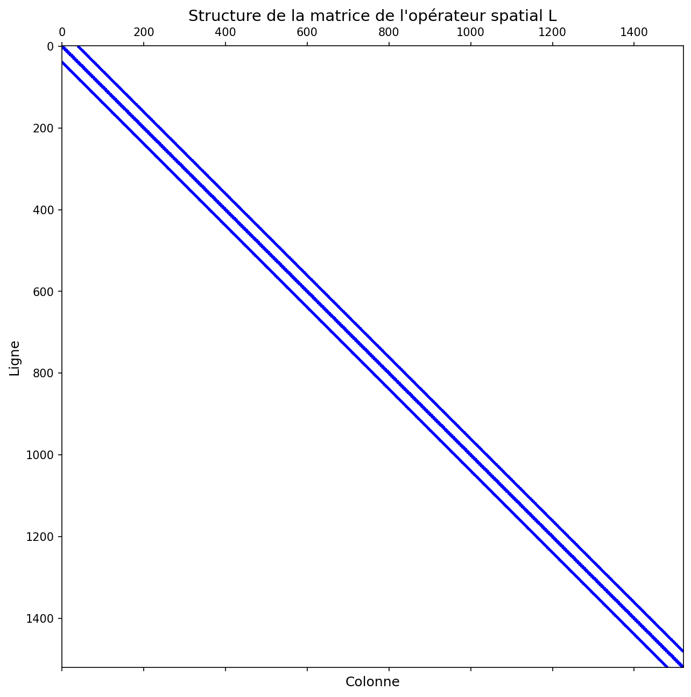

📐 Équation Gouvernante
Équation de Transport
ρ ∂φ/∂t + ρ U·∇φ = Γ ∇²φ
Champ de vitesse au point de stagnation:
u = x, v = -y
⚙️ Paramètres du Problème
Densité (ρ)
1.2 kg/m³
Diffusion (Γ)
0.1 m²/s
Domaine
[0,1] × [0,1]
Résolution
41 × 41
Points Intérieurs
1521
Schéma
Upwind
📊 Résultats (Solution Stationnaire de Test)
Flux Total
0.590851
À la paroi ouest
Flux Moyen
0.590851
Par unité de longueur
Flux Maximum
3.018101
À y = 0.975
Nombre de Péclet
0.3
Pe < 2 ✓
✅ Validation: Les résultats de la solution stationnaire
confirment que la discrétisation spatiale est correcte et prête pour
l'intégration temporelle.
📈 Visualisations

Solution φ et Champ de Vitesse
Distribution de φ dans le domaine avec le champ de vitesse u=x, v=-y

Distribution du Flux Diffusif
Flux à la paroi ouest en fonction de y

Structure de la Matrice Sparse
Matrice pentadiagonale par blocs (0.32% de densité)
🔢 Système Matriciel
Formulation
L · φ = -b (problème stationnaire)
dφ/dt = -1/ρ * (L·φ + b) (problème instationnaire)
Taille de L
1521 × 1521
Éléments Non-Nuls
7449
Densité
0.32%
Type
Pentadiagonale
📁 Fichiers Générés
transport_differences_finies.py
Code principal - Classe complète avec discrétisation spatiale
exemple_utilisation.py
Exemple commenté d'utilisation du code
analyse_schemas.py
Analyse comparative des schémas de discrétisation
README.md
Documentation technique complète
GUIDE_DEMARRAGE_RAPIDE.md
Guide de démarrage rapide avec exemples
discretisation_spatiale_resume.pdf
Résumé PDF avec équations et méthodologie
🎯 Prochaines Étapes - Intégration Temporelle
Objectif
Résoudre l'équation instationnaire de t = 0 à t = 0.12 s et calculer le flux diffusif final à la paroi ouest.
Méthode Recommandée
- Runge-Kutta 4 (RK4) - Bon compromis précision/stabilité
- Pas de temps: Δt < 0.001875 s (critère CFL)
- Condition initiale: φ = 0 dans le domaine intérieur
Code d'Exemple
from scipy.integrate import solve_ivp
def rhs(t, phi):
return -1.0/rho * (L @ phi + b)
sol = solve_ivp(rhs, (0, 0.12), phi0, method='RK45')
def rhs(t, phi):
return -1.0/rho * (L @ phi + b)
sol = solve_ivp(rhs, (0, 0.12), phi0, method='RK45')